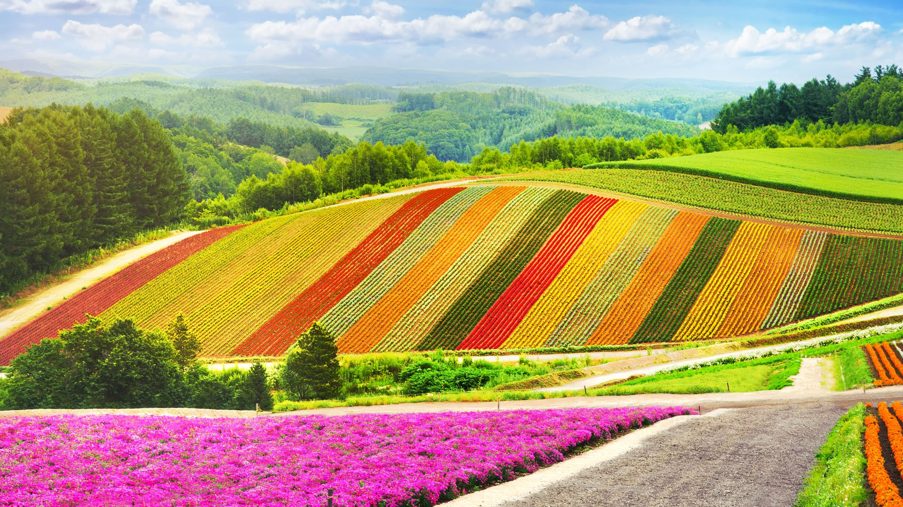
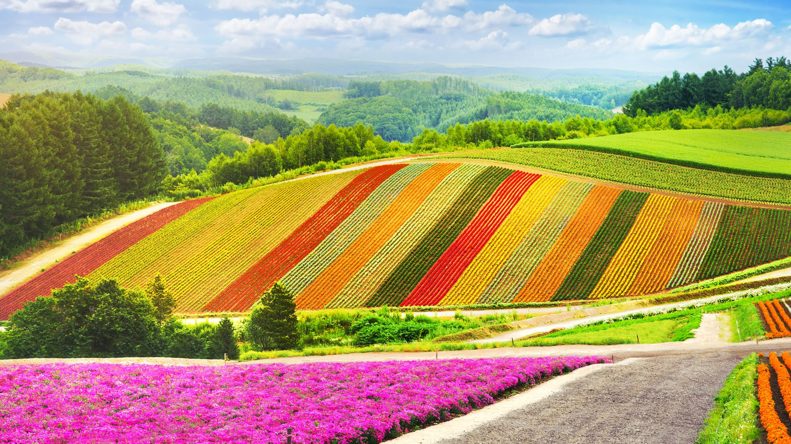

- Immerse yourself in the charm of Hokkaido's snowy and pristine winter landscape
- Get up close and personal with penguins and racoons at the popular Asahiyama Zoo
- Marvel at the iconic Biei Aoike, made famous by Apple's default desktop photos
- Explore the wonders of Biei Blue Pond and admaire the serene turquoise waters
- Discover the whimsical playground of Ningle Terrace and buy a handmade souvenir

playing and eating together with those friends.I learned manymore about japanese language and culture throughout the experience. Also it was very interesting
to be able to discuss various countries,cultural backgrounds,language,social status etc with each cultural representative.
Hokkaido University

Boasting the largest number of faculties of Japan’s national universities, we cover almost
all areas of the humanities and social
and natural sciences and are leader in research activities
in Japan and the world.
Hokkaido university`s alumni include a Nobel laureate, business leaders,
research pioneers, artists and writers.


 



Japan's 47 prefectures, the northernmost, coldest, and least-densely populated, with just 5.4 million
people on 22% of Japan's total land area, according to the Ministry of the Environment.
But Hokkaido also contains a quarter of Japan's total
farmland, more than any other region in Japan,
thanks to major efforts in the 19th century to convert the island into an agricultural hub.
Since then,
Hokkaido has earned a reputation as Japan's "larder," the nation's major producer of rice,
dairy, and other important agricultural products,
in addition to top-notch seafood.
Hokkaido is also one of the only parts of Japan inhabited and influenced by the indigenous Ainu people.